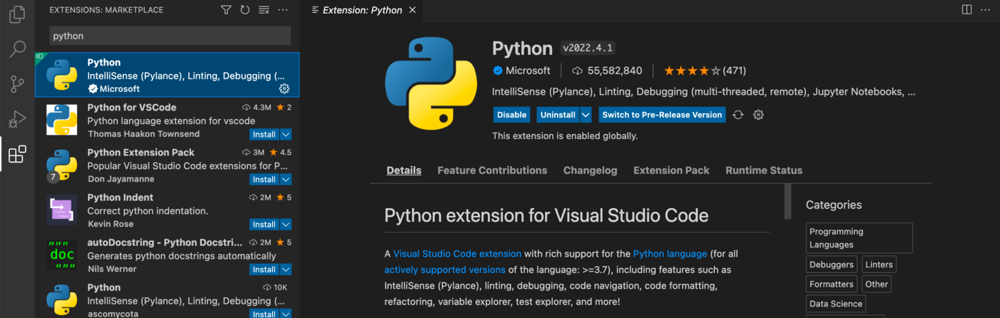
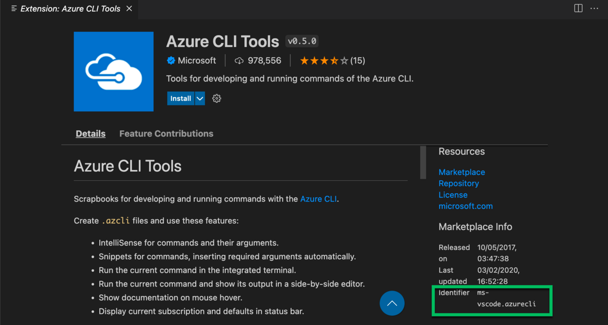
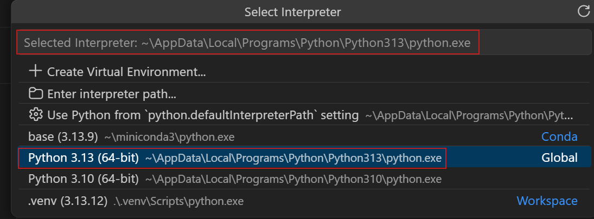

Python et environnement conda#
Quatre étapes, à faire une fois par poste et par compte, dans cet ordre. Elles supposent VS Code ouvert sur le dossier du TD (VS Code).
Versions#
Les noms de commandes et de réglages de cette page ont été vérifiés avec VS Code 1.137 et l’extension Python 2026.4 (septembre 2026). Ils sont les mêmes depuis VS Code 1.56 (mai 2021, arrivée des profils de terminal) et l’extension Python de 2021 ; sur une version plus ancienne, les noms peuvent différer.
Pour connaître les versions du poste : menu Help, About (ou Aide, À
propos) pour VS Code ; pour l’extension, panneau Extensions, cliquer sur
Python, le numéro est écrit à côté du nom. Dans un cmd, code --version
affiche aussi celle de VS Code.
Depuis 2025, l’extension Python délègue la gestion des environnements à
une extension à part, Python Environments. Avec l’extension Python 2026.4,
elle est installée d’office (c’est une dépendance) et prend la main sans
réglage : le journal « Python » le dit dès l’ouverture, « Environment
discovery is managed by the Python Environments extension ». Une icône
Python apparaît alors dans la barre de gauche, et quelques réglages
changent de nom (ils sont signalés plus bas). Le réglage
python.useEnvironmentsExtension, à false, la remet de côté ; il n’y a
pas de raison de le faire.
Les réglages de cette page, réunis en deux fichiers prêts à recopier, sont dans Fichiers de réglages.
Installer l’extension Python#
Panneau Extensions (Ctrl + Maj + X). Dans la zone de recherche en
haut du panneau, taper python. Une liste d’extensions apparaît ; choisir
la première, « Python », publiée par Microsoft (le nom de l’éditeur est
écrit sous le nom de l’extension, avec une coche bleue), et cliquer
Install.
{kind=link}

Le panneau Extensions après avoir tapé python ; ici l’extension est déjà
installée, d’où les boutons Disable et Uninstall à la place d’Install
(documentation VS Code, CC BY 3.0 US).#
Plusieurs extensions s’appellent « Python ». Ce qui distingue la bonne
sans ambiguïté est son identifiant, ms-python.python. Il n’est pas
écrit dans la liste : il se lit dans la page de l’extension, à droite, en
bas de la colonne « Marketplace Info », ligne « Identifier » (faire
défiler la page si besoin).
{kind=link}

Où se lit l’identifiant d’une extension : ici une autre extension de
Microsoft, mais l’emplacement est le même pour Python, où on lit
ms-python.python (documentation VS Code, CC BY 3.0 US).#
Trois extensions apparaissent ensuite comme installées : Python, Pylance, Python Debugger. Si l’installation ne se fait pas : V3.
Les fichiers de réglages#
Les réglages qui suivent s’écrivent dans settings.json, au niveau User
(le compte) ou Workspace (le dossier ouvert), par l’interface ou dans le
fichier. Comment les ouvrir, où ils sont sur le disque et comment s’écrit
le fichier : VS Code, section Les réglages.
Choisir l’interpréteur#
L’interpréteur est le Python que VS Code emploie pour exécuter les fichiers
.py. Ouvrir un fichier .py du TD, puis palette, « Python: Select
Interpreter ». Une liste apparaît, avec pour chaque Python trouvé son
nom, son chemin, et son type : Conda pour un environnement conda, Global
pour un Python installé seul. Choisir la ligne base dont le chemin
contient anaconda3.
{kind=link}

La liste « Python: Select Interpreter » ; sur les postes de la salle, la
ligne base porte le chemin C:\ProgramData\anaconda3\python.exe
(documentation VS Code, CC BY 3.0 US).#
Le nom choisi s’affiche en bas à droite de la fenêtre, et il est mémorisé pour ce dossier.
{kind=link}
L’interpréteur choisi, en bas à droite de la fenêtre (documentation VS Code, CC BY 3.0 US).#
Quand un TD a créé son propre environnement (Anaconda), c’est lui qu’on choisit ici, par son nom. VS Code sait aussi créer un environnement conda lui-même (« Python: Create Environment ») ; ce qu’il lance alors, et pourquoi le module passe par l’Anaconda Prompt, est dans Comment VS Code gère les environnements.
Quand la liste ne montre ni base ni les environnements#
Lancé depuis le menu Démarrer, VS Code ne reçoit pas les variables de
l’Anaconda Prompt (Variables d’environnement).
Il cherche alors conda dans une liste de dossiers d’installation
habituels, dont C:\ProgramData\anaconda3 : sur les postes de la salle,
cette recherche aboutit. Quand Anaconda est installé ailleurs, la liste ne
contient que « Enter interpreter path… » et des Python qui ne sont pas
ceux d’Anaconda (V6). Deux réglages y remédient ; les
valeurs sont celles des postes de la salle, à lire dans la cible du
raccourci Anaconda Prompt si elles diffèrent.
python.condaPathLe chemin du programme
conda. Avec ce réglage, VS Code interroge conda et obtient la liste complète des environnements,baseet ceux du compte ; il s’en sert aussi pour activer l’environnement dans le terminal. Valeur :C:\\ProgramData\\anaconda3\\Scripts\\conda.exe. Niveau User seulement : au niveau Workspace, il est ignoré sans message. Il vaut pour les deux extensions, Python et Python Environments. VS Code ne relance pas toujours la recherche après ce changement : faire palette, « Python: Clear Cache and Reload Window » (ou « Developer: Reload Window »).python.defaultInterpreterPathLe chemin du Python à employer pour un dossier tant qu’aucun interpréteur n’y a été choisi. Pour
base:C:\\ProgramData\\anaconda3\\python.exe; pour un environnement créé par le compte :${env:USERPROFILE}\\.conda\\envs\\recette\\python.exe. Niveau User ou Workspace ; au niveau Workspace, il peut être livré dans le.vscode\settings.jsond’un TD. Un choix fait ensuite par « Python: Select Interpreter » l’emporte sur ce réglage pour ce dossier, et la liste propose alors une entrée « Use Python frompython.defaultInterpreterPathsetting » pour y revenir. L’extension Jupyter propose ce même interpréteur en tête de sa liste de noyaux (Notebooks).
Le plus direct, sans réglage : « Enter interpreter path… », puis
« Find… », et choisir le fichier python.exe de l’environnement voulu
aux chemins ci-dessus.
Note
${env:USERPROFILE} est remplacé par VS Code par le dossier du compte,
C:\Users\<nom>. Les réglages qui commencent par python. acceptent
cette écriture, ${env:NOM} pour toute variable d’environnement
(Variables d’environnement). Elle
permet d’écrire un fichier de réglages qui vaut pour tous les comptes, et
de le distribuer tel quel. Les chemins d’Anaconda de la salle, dans
C:\ProgramData, n’en ont pas besoin : ils ne contiennent pas le nom du
compte.
Les autres réglages qui concernent conda#
python-envs.terminal.autoActivationTypecommandpar défaut. Quand VS Code ouvre un nouveau terminal, l’extension y tape la commande d’activation de l’environnement choisi comme interpréteur. Dans uncmd, c’estC:\ProgramData\anaconda3\Scripts\activate && conda activate base, avec le chemin complet : elle fonctionne sans quecondasoit dans lePATH. C’est ce qui fait apparaître(base)dans l’invite. Dans PowerShell, la commande passe par un script,conda-hook.ps1, que les postes de la salle refusent (A7) ; le remède est de changer de terminal (section suivante), pas de mettre ce réglage àoff: sans activation,pythondésigne dans le terminal un autre Python que celui d’Anaconda. La troisième valeur,shellStartup, modifie les fichiers de démarrage du terminal pour qu’il s’active seul ; elle n’est pas utile ici.python.terminal.activateEnvironmentL’ancien nom du réglage précédent, lu par l’extension Python quand Python Environments est mise de côté. Vrai par défaut ; le laisser.
python-envs.defaultEnvManagerL’outil que VS Code emploie quand on lui demande de créer un environnement (bouton « Create Environment »), et celui dont la liste s’affiche en premier dans la vue Python :
ms-python.python:venvpar défaut (des environnementsvenv, sans conda),ms-python.python:condapour que ce soit conda. Sans ce réglage, un « Create Environment » lancé par mégarde produit unvenvdans le dossier du TD, et la vue Python place venv avant conda. Le module crée ses environnements dans l’Anaconda Prompt, mais ce réglage évite cette confusion : le poser.python-envs.defaultPackageManagerL’outil employé par « Install Package » dans la vue Python :
ms-python.python:pippar défaut,ms-python.python:condapour que ce soit conda. Même raison que le précédent.python.useEnvironmentsExtensionNe pas le poser. À
false, la gestion des environnements revient à l’extension Python seule, et les réglagespython-envs.sont ignorés.
Régler le terminal#
Par défaut, le terminal de VS Code est un PowerShell, et sur les postes de
la salle PowerShell ne peut pas activer l’environnement d’Anaconda
(A7). On lui substitue un cmd
(Les terminaux) : VS Code en a un parmi ses
profils, « Command Prompt », et l’extension Python y tape la commande
d’activation à l’ouverture.
Palette, « Preferences: Open User Settings (JSON) ». Ajouter entre les deux accolades du fichier (après une virgule, s’il y a déjà quelque chose) :
"terminal.integrated.defaultProfile.windows": "Command Prompt"
Enregistrer (Ctrl + S). Puis menu Terminal, New Terminal. L’onglet
s’appelle « Command Prompt », une ligne activate && conda activate base
s’écrit seule, et l’invite commence par (base), ou par le nom de
l’environnement choisi comme interpréteur. Si rien ne change : palette,
« Developer: Reload Window ». Si le terminal affiche une erreur :
V5.
Variante : le terminal de l’Anaconda Prompt#
L’activation ci-dessus dépend de l’extension Python. Pour un terminal qui s’ouvre activé quoi qu’il arrive, y compris sans interpréteur choisi ou avec l’activation automatique coupée, on décrit à VS Code le terminal de l’Anaconda Prompt lui-même, à la place du réglage précédent :
"terminal.integrated.profiles.windows": {
"Anaconda Prompt": {
"path": "C:\\Windows\\System32\\cmd.exe",
"args": ["/K", "C:\\ProgramData\\anaconda3\\Scripts\\activate.bat", "C:\\ProgramData\\anaconda3"]
}
},
"terminal.integrated.defaultProfile.windows": "Anaconda Prompt"
L’onglet s’appelle alors « Anaconda Prompt ». L’extension y tape tout de même sa commande d’activation, dans un terminal déjà activé ; c’est sans effet.
Note
Les deux chemins C:\ProgramData\anaconda3 sont ceux de l’installation
de la salle. Pour les lire sur un poste : menu Démarrer, clic droit sur
« Anaconda Prompt », Ouvrir l’emplacement du fichier, puis clic droit sur
le raccourci, Propriétés, champ Cible. Il contient
%windir%\System32\cmd.exe "/K" C:\ProgramData\anaconda3\Scripts\activate.bat C:\ProgramData\anaconda3 :
les deux chemins du réglage sont les deux derniers, dans le même ordre.
Vérifier#
Ce qu’on fait |
Ce qu’on doit voir |
Sinon |
|---|---|---|
Dans le terminal, taper |
le chemin d’Anaconda, le même que dans l’Anaconda Prompt |
|
Ouvrir un fichier |
ce que le programme affiche, dans le terminal |
Le chemin affiché par la première commande est celui de l’environnement
choisi comme interpréteur. Si un import échoue alors que le paquet est
installé, c’est presque toujours que les deux diffèrent
(V8).
Source des captures d’écran#
Les captures de cette page viennent de la documentation de Visual Studio Code (Microsoft), publiée sous licence Creative Commons Attribution 3.0 US.